File: 000180.gt.txt (if the image is defective, simply delete all Arabic text and the line will be excluded)
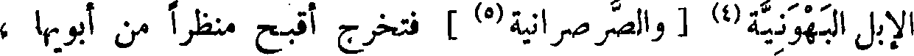
الإبل البهونية(4) [ والصرصرانية(٥) ] فتخرج أقبح منظرا من أبويها ،
File: 000181.gt.txt (if the image is defective, simply delete all Arabic text and the line will be excluded)
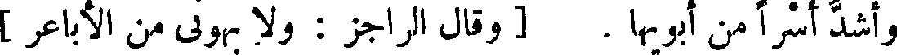
وأشد أسرا من أبويها . [ وقال الراجز : ولا بهوني من الأباعر ]
File: 000182.gt.txt (if the image is defective, simply delete all Arabic text and the line will be excluded)
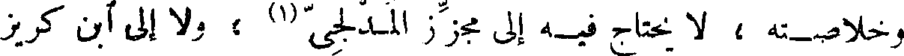
وخلاصته ، لا يحتاج فيه إلى مجزز المدلجي(1) ، ولا إلى آبن كريز
File: 000183.gt.txt (if the image is defective, simply delete all Arabic text and the line will be excluded)
( خصاء الروم )
File: 000184.gt.txt (if the image is defective, simply delete all Arabic text and the line will be excluded)
الخزاعي .
File: 000185.gt.txt (if the image is defective, simply delete all Arabic text and the line will be excluded)
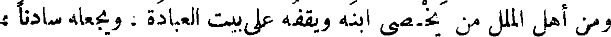
ومن أهل الملل من يخصي ابنه ويقفه على بيت العبادة، ويجعله سادنا ،
File: 000186.gt.txt (if the image is defective, simply delete all Arabic text and the line will be excluded)
كصنيع الروم ، إلا أنهم لا يحدثون في القضيب حدثا ، ولا يتعرضون
File: 000187.gt.txt (if the image is defective, simply delete all Arabic text and the line will be excluded)
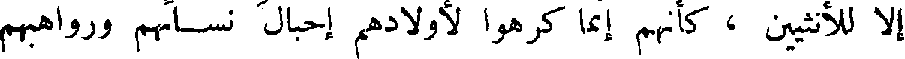
إلا للأنثيين ، كأنهم إنما كرهوا لأولادهم إحبال نسائهم ورواهبهم
File: 000188.gt.txt (if the image is defective, simply delete all Arabic text and the line will be excluded)
فقط ! ! فأما قضاء الوطر وبلوغ اللذة ، فقد زعموا أنهم يبلغون من ذلك
File: 000189.gt.txt (if the image is defective, simply delete all Arabic text and the line will be excluded)
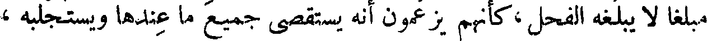
مبلغا لا يبلغه الفحل ، كأنهم يزعمون أنه يستقصي جميع ما عندها ويستجلبه ،
File: 000190.gt.txt (if the image is defective, simply delete all Arabic text and the line will be excluded)
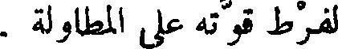
لفرط قوته على المطاولة .
File: 000191.gt.txt (if the image is defective, simply delete all Arabic text and the line will be excluded)
وكل خصاء في الدنيا فإنما أصله من قبل الروم ، ومن العجب
File: 000192.gt.txt (if the image is defective, simply delete all Arabic text and the line will be excluded)
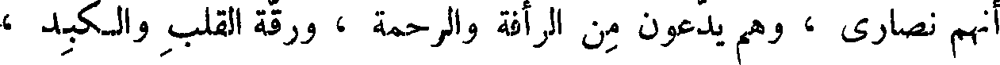
أنهم نصارى ، وهم يدعون من الرأفة والرحمة ، ورقة القلب والكبد ،
File: 000193.gt.txt (if the image is defective, simply delete all Arabic text and the line will be excluded)
ما لايدعيه أحد من جميع الأصناف ، وحسبك بالخصاء مثلة ! وحسبك
File: 000194.gt.txt (if the image is defective, simply delete all Arabic text and the line will be excluded)
بصنيع الخاصي قسوة ! ولا جرم أنهم بعثوا على أنفسهم من الخصيان ، من
File: 000195.gt.txt (if the image is defective, simply delete all Arabic text and the line will be excluded)
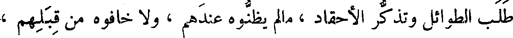
طلب الطوائل وتذكر الأحقاد ، مالم يظنوه عندهم ، ولا خافوه من قبلهم ،
File: 000196.gt.txt (if the image is defective, simply delete all Arabic text and the line will be excluded)
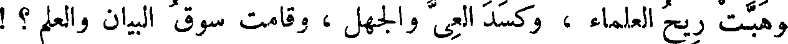
وهبت ريح العلماء ، وكسد العي والجهل ، وقامت سوق البيان والعلم ؟ !
File: 000197.gt.txt (if the image is defective, simply delete all Arabic text and the line will be excluded)
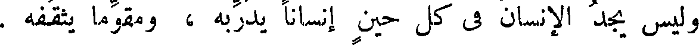
وليس يجد الإنسان في كل حين إنسانا يدربه ، ومقوما يثقفه .
File: 000198.gt.txt (if the image is defective, simply delete all Arabic text and the line will be excluded)
والصبر على إفهام الريض شديد ، وصرف النفس عن مغالبة العالم أشد
File: 000199.gt.txt (if the image is defective, simply delete all Arabic text and the line will be excluded)
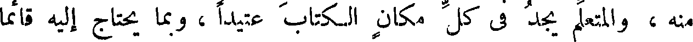
منه ، والمتعلم يجد في كل مكان الكتاب عتيدا ، وبما يحتاج إليه قائما
File: 000200.gt.txt (if the image is defective, simply delete all Arabic text and the line will be excluded)
وما أكثر من فرط في التعليم أيام خمول ذكره ، وأيام حداثة سنه ! !
File: 000201.gt.txt (if the image is defective, simply delete all Arabic text and the line will be excluded)
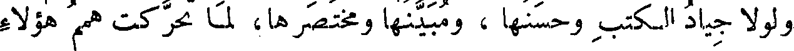
ولولا جياد الكتب وحسنها ، ومبينها ومختصرها، لما تحركت همم هؤلاء
File: 000202.gt.txt (if the image is defective, simply delete all Arabic text and the line will be excluded)
لطلب العلم ، ونزعت إلى حب الأدب ، وأنفت من حال الجهل ، وأن
File: 000203.gt.txt (if the image is defective, simply delete all Arabic text and the line will be excluded)
ولذلك قال عمر رضي الله تعالى عنه : « تفقهوا قبل أن تسودوا » .
File: 000204.gt.txt (if the image is defective, simply delete all Arabic text and the line will be excluded)
( كتب أبي حنيفة )
File: 000205.gt.txt (if the image is defective, simply delete all Arabic text and the line will be excluded)
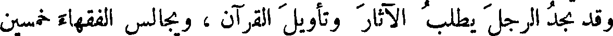
وقد تجد الرجل يطلب الآثار وتأويل القرآن ، ويجالس الفقهاء خمسين
File: 000206.gt.txt (if the image is defective, simply delete all Arabic text and the line will be excluded)
عاما ، وهو لا يعد فقيها ، ولا يجعل قاضيا ، فما هو إلا أن ينظر في كتب
File: 000207.gt.txt (if the image is defective, simply delete all Arabic text and the line will be excluded)
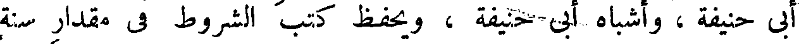
أبي حنيفة ، وأشباه أبي حنيفة ، ويحفظ كتب الشروط في مقدار سنة
File: 000208.gt.txt (if the image is defective, simply delete all Arabic text and the line will be excluded)
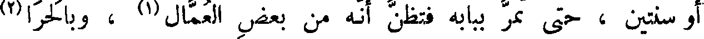
أو سنتين ، حتى تمر ببابه فتظن أنه من بعض العمال(1) ، وبالحرا(2)
File: 000209.gt.txt (if the image is defective, simply delete all Arabic text and the line will be excluded)
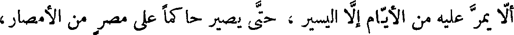
ألا يمر عليه من الأيام إلا اليسير ، حتى يصير حاكما على مصر من الأمصار،
To Save: `Ctrl+s`, make sure to choose `Webpage, complete`!